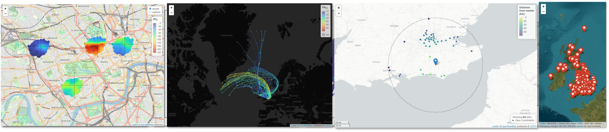

openairmaps combines the robust analytical methods found in openair with a range of dynamic and static mapping capability. Core functionality includes visualising UK AQ networks (networkMap()), putting “polar directional markers” on maps (e.g., polarMap()) and overlaying HYSPLIT trajectories on maps (e.g., trajMap()), all using the leaflet package. Static equivalents of most functions are also available for insertion into traditional reports and academic articles.
Part of the openair toolkit
|
|
|
💡 Core Features
openairmaps has developed at pace to align openair with R’s modern geospatial ecosystem.
Network visualisation of many UK-based monitoring networks through
networkMap(), all of which can also be searched usingsearchNetwork().Directional analysis maps to place
openair::polarPlot()and other “polar coordinate” plots on maps.Trajectory analysis maps (such as
trajMap()andtrajLevelMap()) for interactive implementations of theopenair::trajPlot()family.Flexible map conditioning aligned with the openair
typeoption to easily condition maps by season, day of the week, and so on.Map building utilities such as building popups for interactive maps, formatting common pollutant names and units, and converting UK postcodes to lat/lng coordinates.

📖 Documentation
All openairmaps functions are fully documented; access documentation using R in your IDE of choice.
?openairmaps::polarMapDocumentation is also hosted online on the package website.
A guide to the openair toolkit can be found in the online book, which contains lots of code snippets, demonstrations of functionality, and ideas for the application of openair’s various functions.
🗃️ Installation
openairmaps can be installed from CRAN with:
install.packages("openairmaps")You can also install the development version of openairmaps from GitHub using pak:
# install.packages("pak")
pak::pak("davidcarslaw/openairmaps")🏛️ openairmaps is primarily maintained by Jack Davison.
📃 openairmaps is licensed under the GNU General Public License.
🧑💻 Contributions are welcome from the wider community. See the contributing guide and code of conduct for more information.